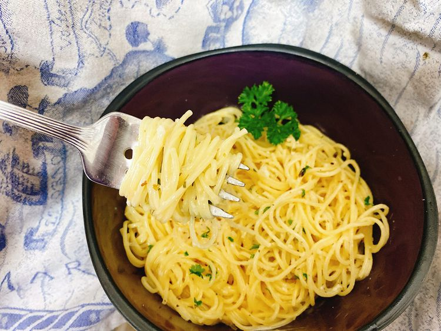

How to make Pastaroni

Description
Whether you label it as a nostalgic childhood yearning, a gourmet creation in a dorm room, or merely a pantry essential from the grocery store, crafting homemade angel hair pasta with herbs is equally delicious and quick! The straightforwardness of the process is undeniable.
Ingredients
- 2 cups Chicken Broth
- 3 Ounces Angel Hair Pasta
- 1 Tablespoon Butter
- 1 Clove Garlic, Minced
- 1/2 Teaspoon Italian Seasoning
- 1/4 Cup Heavy Cream
- 3/4 Cup Finely Shredded Parmesan Cheese
- 1 Tablespoon Minced Fresh Parsley, or to Taste
Steps
- Bring chicken broth in a saucepan to a boil over medium-high heat. Cook angel hair pasta in the boiling broth, stirring occasionally, until tender yet firm to the bite, 4 to 5 minutes.
- Drain pasta, reserving 1/4 cup of chicken broth.
- Melt butter in a saucepan over medium-low heat; add garlic and cook until fragrant, about 30 seconds. Stir in Italian seasoning, reserved 1/4 cup chicken broth, and whipping cream. Add Parmesan cheese and stir until melted.
- Stir in angel hair pasta; toss to coat. Garnish with freshly minced parsley.